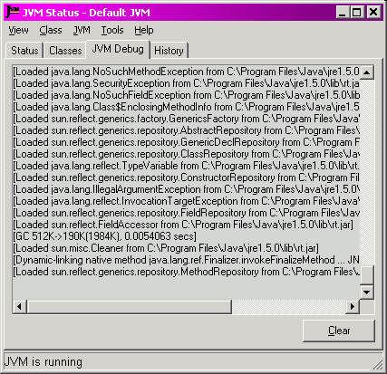

|
JNIPort for Dolphin Smalltalk |
|
|
Back to Goodies |
The Status Monitor's JVM Debug PageThe Status Page is a plug-in page for the Status Monitor. It displays a trace of the debugging output from the Java runtime. 
In a Java program launched by the
When Java is running from Dolphin there is no console, so the logging would be lost. However JNI provides a way of reading the debug stream. If JNIPort has been configured to do so, then this debugging output is captured, and — if the JVM Debug page is open — displayed. JNIPort will capture the output if 'useVFPrintfHook' is set in the 'jniPortSettings'. Please note the following warning: much of the runtime's debugging output is produced by operating-system threads other than the one where Dolphin executes Smalltalk code. If no precautions are taken then this is very likely to lead to deadlocks. See the problem with threads for more discussion of this point.
The first precaution is that you should be using the JNI Helper
library. This interposes a queue between the thread issuing the debugging data, and Dolphin, so
that the sending thread does not need to wait for Dolphin to consume the data. This should
avoid the problem, and I have found that, with the JNI Helper, I can use the JVM Debug page without
encountering deadlocks. But, of course, that may just be luck (for instance I rarely run JNIPort
with If you need to see the debug output, but are still getting deadlocks despite using JNI Helper (or just can't risk ever hitting a deadlock), then you can use an additional feature of JNIPort/JNI Helper. The configuration setting 'jniPortSettings/useVFPrintfRedirection' tells JNIPort to divert the debugging information directly to the Windows debug stream without ever involving Dolphin. (Note that 'jniPortSettings/useVFPrintfHook' still has to be set, or JNIPort won't install a handler at all.) The useful (and free) tool, DebugView, from http://www.sysinternals.com/ can be used to trace the output. Another reason to use the 'useVFPrintfRedirection' flag is if you have some Java problem that is crashing Dolphin — in which case you wouldn't get the chance to read any error messages in the debug page. If the debugging output is not being captured by JNIPort, or it is being redirected to the Windows debug stream, then the JVM Debug page will not work, and will just display a warning message. |
Copyright © Chris Uppal, 2003-2005
Java, JNI (probably), JVM (possibly), and God knows what else, are trademarks of Sun Microsystems, Inc.